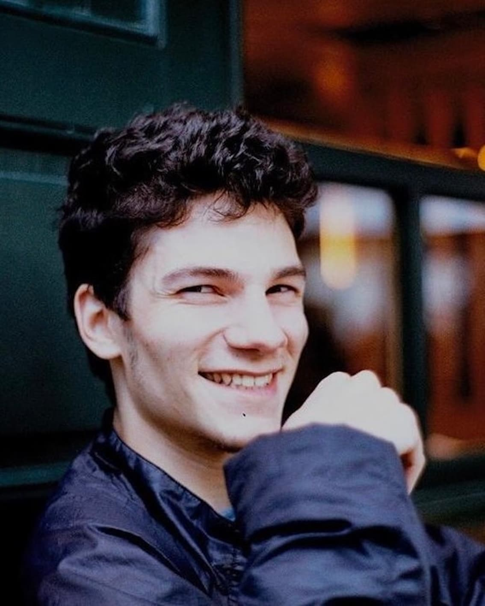

I'm a PhD student at the Institute of Philosophy (ISFI) of the University of Italian Switzerland (USI) in Lugano. My research is in logic and philosophy of mathematics. I’m particularly interested in metamathematics and the arithmetization of syntax with notions such as numbering, provability, and consistency.
My PhD project is supervised by Prof. A. Giordani and Prof. V. Halbach. It is funded by my SNF Doc.CH Grant 227030 entitled Intensionality in Metamathematics and Gödel's Second Incompleteness Theorem (see here for details).
I obtained my master's degree from the University of the Italian Switzerland (USI) in 2022 and my bachelor's degree from the University of Geneva (UNIGE) in 2020.
A CV can be found here.
Email leon.probst@usi.ch
Links ORCID · PhilPeople · Bluesky